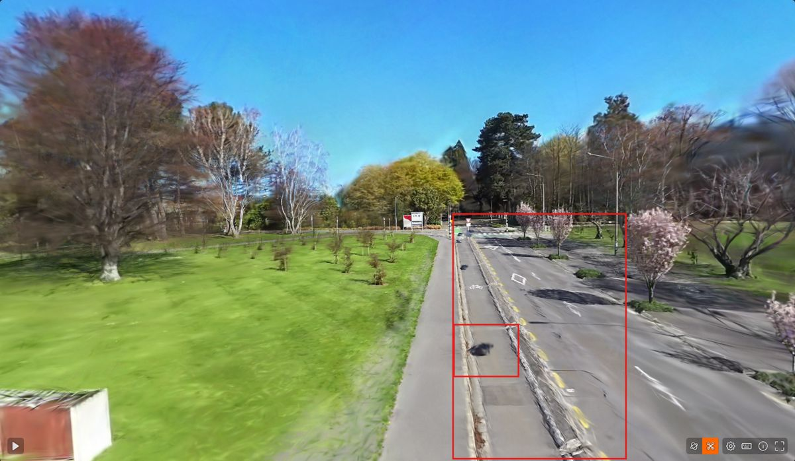
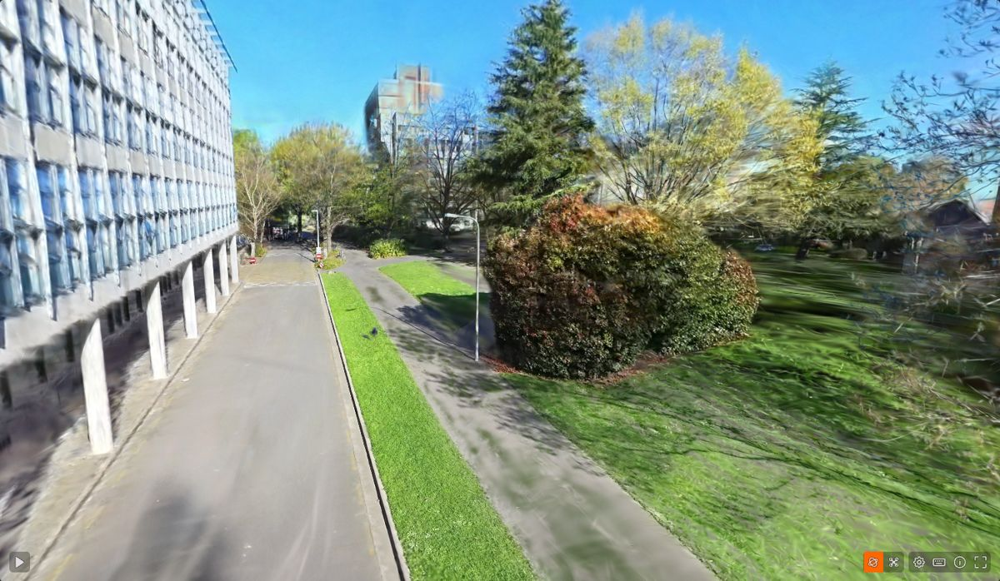
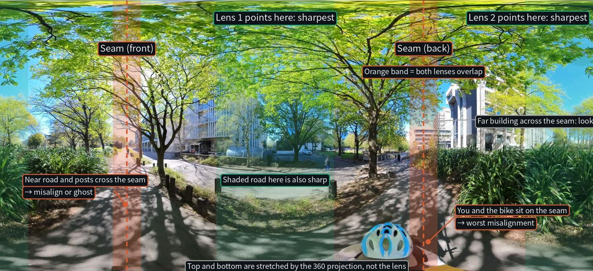

3D Gaussian Splatting models from Insta360 ONE RS 1-Inch 360 video, captured by bike on the UC campus on 29 September 2026. Pipeline: 360 video → perspective views → COLMAP (rig, sequential matching) → LichtFeld Studio. Models are shown uncleaned.
Training done. Model link will be added after upload to SuperSplat.



| Issue | Cause | Change in the road test |
|---|---|---|
| Road surface streaky and soft | Level views only see the ground from 2 m out, at a steep angle. Straight ahead sits on the lens seam. | Add 3 views tilted 30° down |
| Streaks when viewed off the path | Single pass: every point seen from one line only | Use both directions of the same road |
| Fine detail soft | 30,000 iterations for 3054 images is about 10 views per image | 150,000 iterations |
| GPS alignment off by up to 37 m (065A) | Video time zero is the mp4 creation time, 10 s before the file name time | Fixed: alignment error now 2 to 3 m |
| Dark blob on the path | Rider's own shadow moves with the camera | Clean in SuperSplat; capture on overcast days or at midday |
Disaster response needs models fast, so every stage is timed. All runs on one PC with an RTX 5060 GPU. Times are from the COLMAP and LichtFeld logs.
| Stage | 065A 3054 images | 066B 1710 images | Road test 5346 images |
|---|---|---|---|
| Feature extraction | 2.5 min | 1.2 min | 4.2 min |
| Matching | 55.5 min | 27.6 min | 35.9 min |
| Mapper (camera poses) | 261 min | 240 min | 101 min (global mapper) |
| Training | 53.3 min (30,000 it) | 42.0 min (30,000 it) | 139 min (150,000 it) |
| Total | 6.2 h | 5.2 h | 4.7 h |
| Video length | 4 min 25 s | 1 min 35 s | 3 min 18 s |
Ideas to test for speed
Standard 3DGS check: every 8th image is held out from training. The model then renders those unseen views, and each render is compared with the real photo.
| Metric | What it measures | Better | 065A 7k / 30k | 066B 7k / 30k |
|---|---|---|---|---|
| PSNR (dB) | Pixel colour error | Higher | 21.59 / 23.37 | 22.77 / 24.33 |
| SSIM | Structure and edges, 0 to 1 | Higher | 0.698 / 0.752 | 0.749 / 0.797 |
| LPIPS | How different it looks to a person, 0 to 1 | Lower | 0.458 / 0.356 | 0.342 / 0.277 |
PSNR and SSIM come from LichtFeld Studio. LichtFeld 0.5.2 does not compute LPIPS, so it is computed afterwards from the saved photo and render pairs.
Related pages: 360 Bike Capture Guide (field method) · Shoot Check Replay (weather on the capture day)